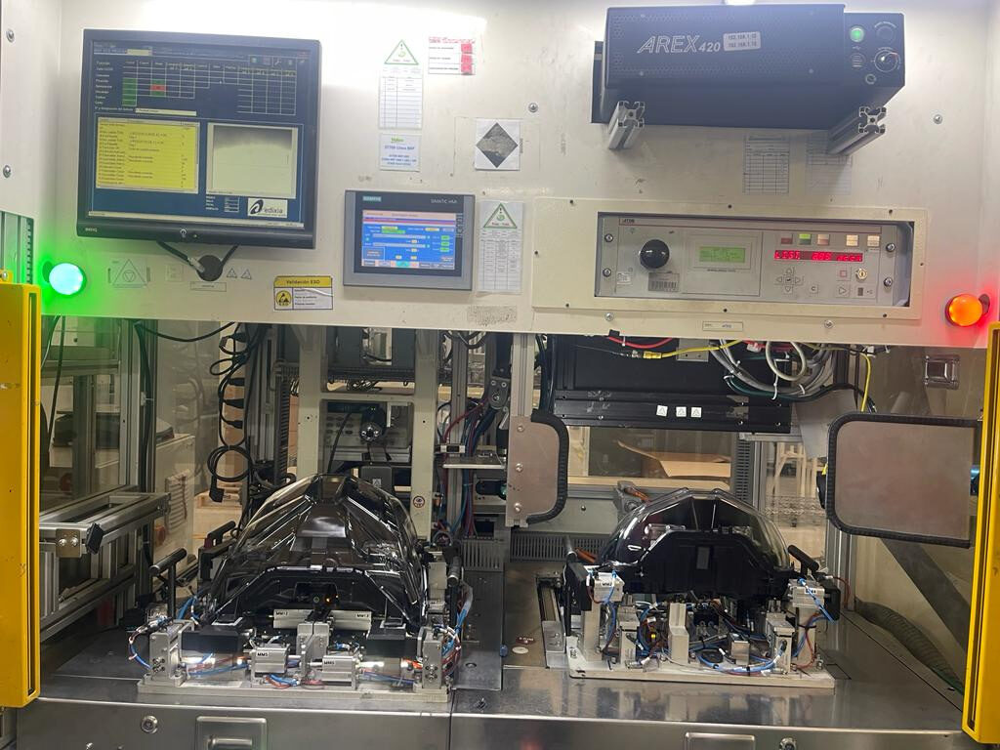

Scope of Work
- Linux software development integrating directly with Valeo's Edixia photometry system.
- Comparison logic classifying each unit against predefined tolerance ranges.
- ZPL label design and real-time printing to an Epson ColorWorks C6500.
- Gateway installation inside production control panels, functional validation, documentation and operator training.
Architecture
The gateway receives luminosity coordinates from the Edixia system and classifies them into color-coded quality bands (green/yellow/orange/white/purple) against predefined tolerance ranges, driving a ZPL-programmed label printer in real time — no manual sorting step required.
Technology
- Linux gateway software
- Epson ColorWorks C6500 label printer, ZPL
- Integration with Valeo's Edixia photometry system
Result
- Reduced manual processing and labeling time.
- Standardized QC classification by color code.
- Compact, portable hardware, adaptable to other lines.

